Every crop, one screen
Thirty-odd crops for one L-shaped bed: the Japanese varieties on the seed list, the local staples, and the perennials in the shed-end corner. Each screen gives the season, the bed position, the techniques worth copying, and how the planned app will water and prompt. Scroll down or use the index.
Plant images are Blender concept renders in the site's oculus style, not photos. Techniques are drawn from published Japanese and Australian growing guides and are marked "planned" where this bed has not tried them yet.
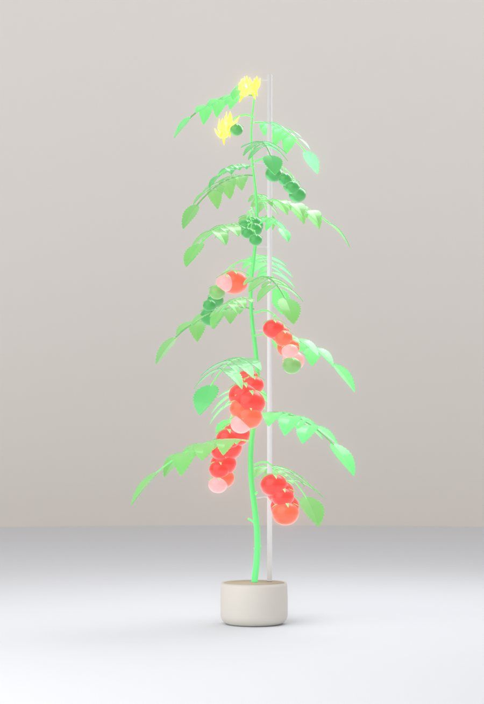
render coming
Crop Wiki package v3: garden crops for toddlers around 12-24 months
Prepared 3 Nov 2026 by the Coordinator for the Gardener bot. v2 (MEXT ranking, EC-106) plus a section on Japanese research (EC-107 to EC-118). Uses only Reviewer-approved wording (EC-090, EC-098, EC-099, EC-101 to EC-118). Generic public copy; it is not about any individual child.
1. Method
Using Japan's official food composition tables (MEXT), we compared common garden crops by nutrient content per equal weight. The comparison averages six nutrients: fibre, calcium, iron, vitamin A, folate and vitamin C. Leafy greens such as kale, chard, mizuna, shungiku, komatsuna and spinach, plus edamame, came out highest. This compares nutrient content, not how much a toddler eats or absorbs. (EC-106; Source tier: MAIN (Japanese government))
- Ranked by nutrient content per equal weight (per 100 g), not per serve and not a recommended amount.
- Scoring: six nutrients per 100 g (iron, vitamin C, folate, dietary fibre, vitamin A as RAE, calcium), each scaled to the highest crop in its list, equally weighted; the score is the mean of the six ratios (0-1). Vegetables and herbs are scored as separate lists.
- MEXT symbols: '-' (not measured) is treated as missing; Tr is read as 0; bracketed estimates are used as listed (only daikon vitamin A "(0)"). No score depends on a missing value.
- State: each crop's state (raw or boiled) and MEXT food number are shown. Values are as listed by MEXT; some crops are raw and others boiled, which favours raw crops for vitamin C and folate. Kale is raw while the leafy greens it is compared with are boiled, so kale's first place is not a like-for-like result.
- Stand-ins: leaf lettuce (MEXT 06314); other lettuces differ. Cherry tomato (MEXT 06183) for tomatoes. Asatsuki (Japanese chive), used for chives. Thyme not ranked (MEXT lists dried ground thyme only).
- Content is not absorption. Vitamin C, found widely in fruit and vegetables, helps the body absorb the iron in plant foods (non-haem iron) (EC-099, MAIN). Home-grown produce varies.
- No development or health-outcome claims are made. Any 50 g figures would be illustrative only; this version shows per-100 g values.
2. Top 10 (ranked by nutrient content per equal weight; Source tier: MAIN (Japanese government))
Per 100 g. Fe = iron (mg), C = vitamin C (mg), Fol = folate (µg), Fib = fibre (g), A = vitamin A RAE (µg), Ca = calcium (mg).
| Rank | Crop | State | MEXT no. | Fe | C | Fol | Fib | A | Ca | Score |
|---|---|---|---|---|---|---|---|---|---|---|
| 1 | Kale | raw | 06080 | 0.8 | 81 | 120 | 3.7 | 240 | 220 | 0.599 |
| 2 | Edamame | boiled | 06016 | 2.5 | 15 | 260 | 4.6 | 24 | 76 | 0.581 |
| 3 | Chard (Swiss chard) | boiled | 06262 | 2.1 | 7 | 92 | 3.8 | 320 | 130 | 0.561 |
| 4 | Mizuna | boiled | 06073 | 2.0 | 19 | 90 | 3.6 | 140 | 200 | 0.543 |
| 5 | Shungiku | boiled | 06100 | 1.2 | 5 | 100 | 3.7 | 440 | 120 | 0.537 |
| 6 | Komatsuna | boiled | 06087 | 2.1 | 21 | 86 | 2.4 | 260 | 150 | 0.513 |
| 7 | Spinach (year-round average) | boiled | 06268 | 0.9 | 19 | 110 | 3.6 | 450 | 69 | 0.499 |
| 8= | Broccoli (florets) | boiled | 06264 | 0.9 | 55 | 120 | 4.3 | 69 | 41 | 0.403 |
| 8= | Broad bean (immature) | boiled | 06125 | 2.1 | 18 | 120 | 4.0 | 18 | 22 | 0.403 |
| 10 | Leaf lettuce (MEXT 06314); other lettuces differ | raw | 06314 | 1.0 | 21 | 110 | 1.9 | 200 | 58 | 0.345 |
Source: 日本食品標準成分表（八訂）増補2023年, https://www.mext.go.jp/content/20260327-mxt_kagsei-mext-000029402_02.xlsx (Source tier: MAIN (Japanese government))
Notes per crop
- Kale (1): raw values; see the raw/boiled note in section 1.
- Edamame (2): this falls under the general guidance for beans and peas: cook until tender, then mash (EC-101).
- Edamame choking notes (beside edamame): Japan's Consumer Affairs Agency advises not giving hard foods that need chewing, such as beans and nuts, to children aged 5 and under (EC-114, MAIN (Japanese government)). Japan's Consumer Affairs Agency describes a 1-year-old who stuffed several edamame beans into their mouth, inhaled half a bean into the lung, and needed it removed under general anaesthesia. This one case shows how it can happen; it doesn't show how often (EC-115, MAIN (Japanese government)). A Japanese hospital case report describes an inhaled edamame bean that didn't show on X-ray. It was located with repeated CT scans and removed 9 days after it was inhaled (EC-117, Supporting (hospital), illustration only). The Japanese airway studies cited here name peanuts, not garden crops (EC-116, EC-118). Labelled inference: we infer that firm, round beans such as edamame and broad beans carry a similar risk, as Japan's Consumer Affairs Agency groups beans and nuts together (EC-114, EC-118).
- Chard, mizuna, shungiku, komatsuna (3-6): leafy greens, ranked as boiled.
- Spinach (7) — nitrate note (Source tier: BACKUP, EC-102): A 2010 European food safety panel concluded that nitrate in lettuce is not a health concern for children. Nitrate in spinach could raise some young children's intake to a level where a concern cannot be ruled out. The panel advised against giving spinach to children with bacterial gut infections, and noted that poorly stored cooked vegetables can convert nitrate to nitrite. (Spinach and lettuce only; not assessed for chard or Asian greens.)
- Broccoli (8=): tied with broad bean. Raw broccoli stems fall under the general guidance for raw hard vegetables: cook until tender or grate (EC-101). No specific guidance is given here for cooked, soft broccoli.
- Broad bean (8=) — G6PD / favism note (Source tier: MAIN, EC-104, EC-105): Favism is a breakdown of red blood cells that can happen when people with G6PD deficiency eat fava (broad) beans. A university review of case reports found it was most severe in the youngest children and in pregnant women. A Monash-led review found that fava beans (and food cross-contaminated with them) were among the few triggers consistently linked to haemolysis in people with G6PD deficiency; the overall quality of the evidence was low. If you have questions about G6PD deficiency, ask a GP. Preparation: this falls under the general guidance for beans: cook until tender, then mash. See also the bean notes beside edamame (labelled inference, EC-114/EC-118).
- Leaf lettuce (10): see the nitrate note beside spinach: the panel judged nitrate in lettuce not a health concern for children (EC-102, BACKUP).
3. The rest of the crops
Vegetables and fruit, ranks 11-19 (same list and method):
| Rank | Crop | State | MEXT no. | Score |
|---|---|---|---|---|
| 11 | Red capsicum | raw | 06247 | 0.333 |
| 12 | Snap pea (young pods) | raw | 06022 | 0.244 |
| 13 | Strawberry | raw | 07012 | 0.202 |
| 14 | Negi (long white leek) | boiled | 06350 | 0.178 |
| 15 | Cherry tomato (MEXT 06183) | raw | 06183 | 0.170 |
| 16 | Blueberry | raw | 07124 | 0.157 |
| 17 | Eggplant | boiled | 06192 | 0.129 |
| 18 | Daikon (root, peeled) | boiled | 06135 | 0.124 |
| 19 | Japanese cucumber | raw | 06065 | 0.120 |
- Red capsicum and snap pea are raw values (see section 1). Raw capsicum falls under the general guidance for raw hard vegetables; snap peas fall under the general guidance for peas (EC-101).
- Strawberry and blueberry: berries, cut into small pieces (EC-101). Cherry tomato: quarters (Japan's Children and Families Agency; also Consumer Affairs Agency, EC-114). See section 4.
- Daikon is ranked as boiled. Raw daikon falls under the general guidance for raw hard vegetables. No specific guidance is given here for cooked, soft daikon.
Flavourings (unranked, not compared with vegetables):
- Chilli (MEXT 06171, raw). Not ranked. Heat note (Source tier: BACKUP, EC-103): Germany's risk-assessment agency says children are particularly sensitive to hot chilli products, that serious poisonings in young children have been described, and that hot chilli sauces should be kept out of small children's reach. Its warning is about very hot products; it gives no guidance on ordinary chillies in family cooking.
- Garlic (MEXT 06223, raw). Not ranked; used in small amounts.
Herbs (own list, per 100 g, scaled within herbs only; all raw):
| Rank | Herb | MEXT no. | Score |
|---|---|---|---|
| 1 | Parsley | 06239 | 0.939 |
| 2 | Shiso | 06095 | 0.623 |
| 3 | Basil | 06238 | 0.436 |
| 4 | Coriander | 06385 | 0.312 |
| 5 | Asatsuki (Japanese chive), used for chives | 06003 | 0.309 |
| 6 | Mitsuba (itomitsuba) | 06278 | 0.217 |
- Thyme not ranked (MEXT lists dried ground thyme only).
- Herbs are eaten in small amounts, so these scores are not comparable with the vegetable list. No herb-specific safety caution was sourced.
4. Japanese research
Japanese government surveys and guidance — MAIN (Japanese government)
- Vegetable eating (EC-107): In Japan's 2015 national survey of parents of 2-6-year-olds, about half (52.0%) said their child ate vegetables twice or more a day. (Caregiver-reported frequency, not amounts.) https://www.mhlw.go.jp/file/06-Seisakujouhou-11900000-Koyoukintoujidoukateikyoku/0000134207.pdf
- Mealtime concerns (EC-111): In Japan's 2015 national survey, the most common mealtime concern for parents of 2-3-year-olds was "playing with food" (41.8%). (Same link.)
- Beans, nuts and round foods (EC-114): Japan's Consumer Affairs Agency advises not giving hard foods that need chewing, such as beans and nuts, to children aged 5 and under. It also says to cut round foods like cherry tomatoes into quarters or cook them soft, and to encourage chewing well. https://www.caa.go.jp/policies/policy/consumer_safety/caution/caution_047/
- Edamame case (EC-115): Japan's Consumer Affairs Agency describes a 1-year-old who stuffed several edamame beans into their mouth, inhaled half a bean into the lung, and needed it removed under general anaesthesia. This one case shows how it can happen; it doesn't show how often. https://www.caa.go.jp/policies/policy/consumer_safety/child/project_001/mail/20230124/
Reference intakes — MAIN (Japanese government), general reference values only (EC-109)
Japan's 2025 Dietary Reference Intakes set these general reference values for children aged 1-2:
- iron 4.0 mg a day
- vitamin C 35 mg
- folate 90 µg
- calcium 450 mg (boys) and 400 mg (girls)
- no fibre target until age 3
These are population reference values, not targets for any individual child. For questions about your child's diet, ask a GP (or call Nurse-On-Call on 1300 60 60 24; in an emergency, 000). https://www.mhlw.go.jp/stf/newpage_44138.html · https://www.mhlw.go.jp/content/10904750/001734207.pdf
Japanese research — MAIN (Japanese research)
- Nursery "vegetables first" (EC-108; correlational): In a Tokyo study of over 7,000 nursery children aged 3-5, those at nurseries that promoted "vegetables first" more strongly ate vegetable dishes more often and were more willing to eat vegetables. This is an association, not proof of cause, and it was in older children. https://pubmed.ncbi.nlm.nih.gov/34209773/
- Calcium intake (EC-110): A University of Tokyo study of weighed food records found that calcium intake was below the estimated requirement for many people (29-88%) in every age group from 1 to 79. One author's department is a programme run with Ajinomoto, which the authors say had no role in the study. https://pubmed.ncbi.nlm.nih.gov/38140372/
- Home-grown tomatoes (EC-112; correlational; abstract only): In a Japanese survey of mothers of new kindergarten children (about 3 years old), children who had eaten home-grown tomatoes were more likely to like tomatoes and finish them. This is an association, not proof that gardening caused it. https://www.jstage.jst.go.jp/article/shokuiku/12/3/12_211/_article/-char/ja
- Kindergarten tomato growing (EC-113; correlational, non-randomised; abstract only): In Hokkaido kindergartens, more children in classes that grew tomatoes stopped being picky eaters by harvest and follow-up, while there was no significant change in classes that didn't. The study wasn't randomised, so this doesn't prove the gardening caused the change. https://www.jstage.jst.go.jp/article/eiyogakuzashi/74/1/74_20/_article/-char/ja
- Airway foreign bodies, national survey (EC-116; abstract only): In a Japanese national survey of 165 children with an inhaled object in the airway, 77.6% were aged 2 or under, and most of the objects were foods such as peanuts. https://www.jstage.jst.go.jp/article/jjpp1990/19/1/19_1_85/_article/-char/ja
- Peanuts, Tohoku University Hospital (EC-118; abstract only): At Tohoku University Hospital, peanuts were the most common inhaled object in children aged 0-10 over a 36-year period (1986-2021), though their share of cases fell (68.8% to 38.1%). These figures are peanuts' share of cases, not incidence. Labelled inference: we infer that firm, round beans such as edamame and broad beans carry a similar risk, as Japan's Consumer Affairs Agency groups beans and nuts together (EC-114, EC-118). https://pubmed.ncbi.nlm.nih.gov/37532586/
Supporting (hospital), illustration only
- Edamame on X-ray (EC-117): A Japanese hospital case report describes an inhaled edamame bean that didn't show on X-ray. It was located with repeated CT scans and removed 9 days after it was inhaled. https://www.jstage.jst.go.jp/article/jbes/53/5/53_5_430/_article/-char/ja
None of these findings shows that any crop changes development.
5. Safety notes
- Choking, overview (Source tier: MAIN, EC-101): A University of Padova overview of choking-prevention guidelines found they advise cutting grapes, berries and cherry tomatoes into small pieces; cooking beans and peas until tender, then mashing them; and cooking or grating pieces of raw fruit and vegetables. Round and hard or fibrous foods are the riskiest shapes and textures for young children.
- Beans and nuts (MAIN (Japanese government), EC-114): not giving hard foods that need chewing, such as beans and nuts, to children aged 5 and under; see the notes beside edamame.
- Quarters (Source tier: MAIN (Japanese government), Japan's Children and Families Agency): round foods such as cherry tomatoes and grapes should be cut into quarters, and hard foods cut to suit the child's chewing.
- Blueberries: covered directly as berries (small pieces, EC-101).
- Labelled inferences: edamame and broad beans fall under the general guidance for beans; snap peas fall under the general guidance for peas; raw daikon, raw broccoli stems and raw red capsicum fall under the general guidance for raw hard vegetables. No source names these crops.
- Nitrate: see the note beside the leafy greens (EC-102, BACKUP).
- Broad beans and G6PD: see the note beside broad beans (EC-104, EC-105, MAIN).
- Chilli (Source tier: BACKUP, EC-103; also beside chilli in section 3): Germany's risk-assessment agency says children are particularly sensitive to hot chilli products, that serious poisonings in young children have been described, and that hot chilli sauces should be kept out of small children's reach. Its warning is about very hot products; it gives no guidance on ordinary chillies in family cooking.
- Raw sprouts: excluded (Source tier: MAIN, EC-090). Raw seed sprouts have been linked to many Salmonella and E. coli O157:H7 outbreaks; washing or treating seeds and sprouts does not reliably remove the bacteria. A 1999 university review repeats US public-health advice that children should not eat raw sprouts. The review does not say whether cooking makes sprouts safe.
6. Sources
| Claim | Source | Tier | Link |
|---|---|---|---|
| EC-106 ranking | 文部科学省 日本食品標準成分表（八訂）増補2023年 (MEXT) | MAIN (Japanese government) | https://www.mext.go.jp/content/20260327-mxt_kagsei-mext-000029402_02.xlsx · https://www.mext.go.jp/a_menu/syokuhinseibun/mext_00001.html |
| EC-098, EC-099 | Atkins LA et al., Deakin University (IPAN). Nutrients 2023;15(11):2616 | MAIN | https://pmc.ncbi.nlm.nih.gov/articles/PMC10255056/ |
| EC-101 | Lorenzoni G et al., University of Padova. Front Public Health 2022;10:830876 | MAIN | https://pmc.ncbi.nlm.nih.gov/articles/PMC9160792/ |
| Quarters | Children and Families Agency (Japan), choking and ingestion accidents | MAIN (Japanese government) | https://www.cfa.go.jp/policies/child-safety-actions/handbook/content-1 |
| EC-102 | EFSA CONTAM Panel, EFSA Journal 2010;8(12):1935 | Source tier: BACKUP | https://pmc.ncbi.nlm.nih.gov/articles/PMC13085130/ |
| EC-103 | BfR Communication 39/2023 | Source tier: BACKUP | https://www.bfr.bund.de/cm/349/trial-by-fire-extremely-spicy-food-can-be-particularly-harmful-to-children-s-health.pdf |
| EC-104 | Beretta A et al., University of Pavia. Nutrients 2023;15(2):343 | MAIN | https://pmc.ncbi.nlm.nih.gov/articles/PMC9864644/ |
| EC-105 | Lee SWH, Chaiyakunapruk N, Lai NM et al., Monash University Malaysia. Br J Clin Pharmacol 2017;83(1):211-212 | MAIN | https://pmc.ncbi.nlm.nih.gov/articles/PMC5338146/ |
| EC-090 | Taormina, Beuchat & Slutsker, Emerg Infect Dis 1999;5(5):626-634 | MAIN | https://wwwnc.cdc.gov/eid/article/5/5/99-0503_article |
| EC-107, EC-111 | MHLW, 2015 national infant and child nutrition survey | MAIN (Japanese government) | https://www.mhlw.go.jp/file/06-Seisakujouhou-11900000-Koyoukintoujidoukateikyoku/0000134207.pdf |
| EC-109 | MHLW, Dietary Reference Intakes for Japanese (2025) | MAIN (Japanese government) | https://www.mhlw.go.jp/stf/newpage_44138.html |
| EC-114 | Consumer Affairs Agency, caution 047 (20 Jan 2021) | MAIN (Japanese government) | https://www.caa.go.jp/policies/policy/consumer_safety/caution/caution_047/ |
| EC-115 | Consumer Affairs Agency, Child Safety Mail Vol.617 (Jan 2023) | MAIN (Japanese government) | https://www.caa.go.jp/policies/policy/consumer_safety/child/project_001/mail/20230124/ |
| EC-108 | Tani, Ochi, Fujiwara 2021, Tokyo Medical and Dental University. Nutrients 13:2236 | MAIN (Japanese research) | https://pubmed.ncbi.nlm.nih.gov/34209773/ |
| EC-110 | Shinozaki et al. 2023, University of Tokyo. Nutrients 15:5113 (COI: Ajinomoto programme) | MAIN (Japanese research) | https://pubmed.ncbi.nlm.nih.gov/38140372/ |
| EC-112 | Kida, Arakawa, Takahashi 2018. 日本食育学会誌 12(3):211 | MAIN (Japanese research) | https://www.jstage.jst.go.jp/article/shokuiku/12/3/12_211/_article/-char/ja |
| EC-113 | Kida, Takeda, Arakawa 2016, University of Tsukuba / Tenshi College. 栄養学雑誌 74(1):20 | MAIN (Japanese research) | https://www.jstage.jst.go.jp/article/eiyogakuzashi/74/1/74_20/_article/-char/ja |
| EC-116 | Ichimaru et al. 2008, University of Toyama and others | MAIN (Japanese research) | https://www.jstage.jst.go.jp/article/jjpp1990/19/1/19_1_85/_article/-char/ja |
| EC-117 | Yoshida et al. 2002, Japanese Red Cross Kyoto Daini Hospital | Supporting (hospital) | https://www.jstage.jst.go.jp/article/jbes/53/5/53_5_430/_article/-char/ja |
| EC-118 | Takahashi et al. 2023, Tohoku University. Tohoku J Exp Med | MAIN (Japanese research) | https://pubmed.ncbi.nlm.nih.gov/37532586/ |
No WHO sources are used. The v1 AFCD (FSANZ) ranking is no longer used.
7. Gaps
- The ranking is per equal weight, not per typical toddler serve; no sourced toddler serve per crop exists.
- Mixed raw/boiled states favour raw crops (kale, red capsicum, snap pea) for vitamin C and folate; the size of the bias is not quantified.
- Lettuce and tomato are each represented by one MEXT entry; other varieties differ.
- No source names edamame, snap peas, daikon or broccoli stems for choking; coverage is by labelled inference.
- Nitrate evidence covers spinach and lettuce only (2010 EU data, BACKUP).
- Chilli guidance is BACKUP only and about very hot products. No Australian G6PD prevalence or screening source. No herb-specific cautions sourced.
- No Japanese study measured vegetable intake at 12-24 months; the survey data are frequency at 2-6 years.
- No Japanese repeated-tasting trial with toddlers was found.
- Nothing covers mizuna, komatsuna, shungiku, shiso or daikon in young children.
- The airway studies cited name peanuts, not garden crops; edamame and broad bean risk is a labelled inference.
Warm season
Oct to late Apr. Summer crops are planted out after Cup Day, once soil is above 16 °C.
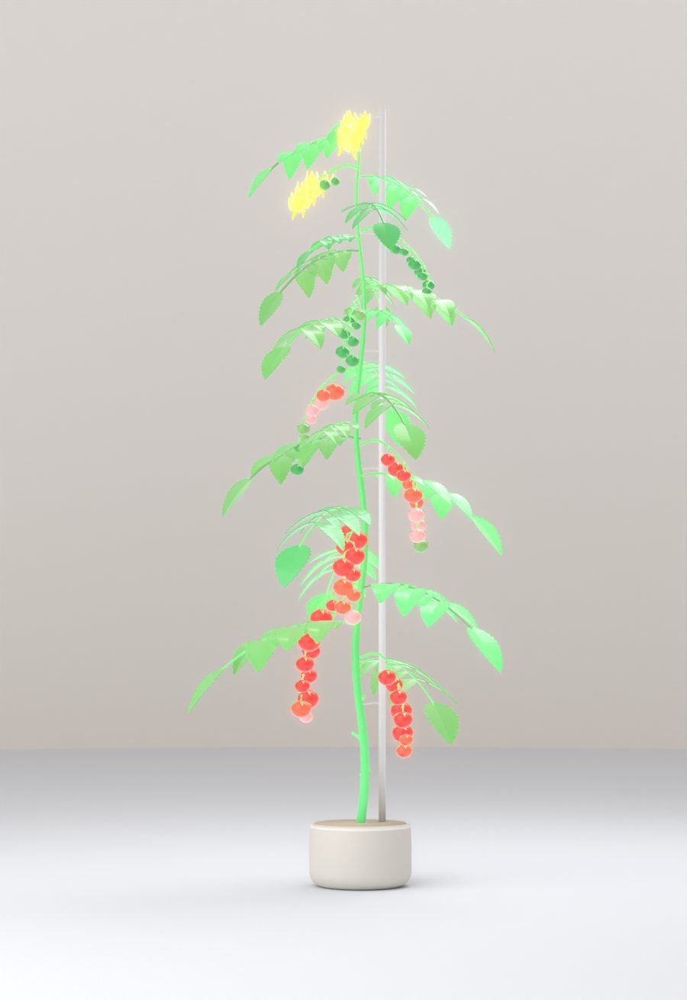
render coming
CF Chika cherry tomatoCF千果
The standard Japanese high-Brix cherry: very sweet, crack-resistant and happy on a single stem. The headline crop of the bed and the one the deficit-watering trial is built around.
Japanese and pro techniques
- Single stem (一本仕立て): pinch every side shoot weekly, tie to one string.
- Deficit watering from first truss colour; target Brix 8–10.
- Rain shelter: the fixed clear roof keeps rain off the leaves and the soil.
- Remove leaves below the lowest ripe truss.
- Log weight and Brix at every pick.
How the AI will handle it (planned)
- Camera: rough heads-up when side shoots are due and when the first truss is colouring (start of deficit).
- Zone 2 waters when either bag probe drops below its floor; the control plant stays on Zone 1.
- Reminders: sow indoors Aug–Sep, plant out after Cup Day, once soil is above 16 °C, start Zone 2 deficit at first truss colour, log Brix weekly.
Lettuce and tomato are each represented by one MEXT entry; other varieties differ.
Strawberry and blueberry: berries, cut into small pieces (EC-101). Cherry tomato: quarters (Japan's Children and Families Agency; also Consumer Affairs Agency, EC-114). See section 4.
Quarters (Source tier: MAIN (Japanese government), Japan's Children and Families Agency): round foods such as cherry tomatoes and grapes should be cut into quarters, and hard foods cut to suit the child's chewing.
Beans, nuts and round foods (EC-114): Japan's Consumer Affairs Agency advises not giving hard foods that need chewing, such as beans and nuts, to children aged 5 and under. It also says to cut round foods like cherry tomatoes into quarters or cook them soft, and to encourage chewing well. https://www.caa.go.jp/policies/policy/consumer_safety/caution/caution_047/
Choking, overview (Source tier: MAIN, EC-101): A University of Padova overview of choking-prevention guidelines found they advise cutting grapes, berries and cherry tomatoes into small pieces; cooking beans and peas until tender, then mashing them; and cooking or grating pieces of raw fruit and vegetables. Round and hard or fibrous foods are the riskiest shapes and textures for young children.
Aiko & Yellow Aiko plum cherryアイコ · イエローアイコ
Firm, oval cherries that rarely crack, sold in red and yellow. Good for colour in the bowl; the skin is thin and the fruit holds together.
Japanese and pro techniques
- Single stem on a string, side shoots pinched weekly.
- Deficit watering as for CF Chika; firm fruit tolerates it well.
- Pick at full colour; yellow fruit is ready when it turns a warm gold.
- Brix log per colour to compare red and yellow.
How the AI will handle it (planned)
- Same Zone 2 profile as CF Chika; each bag probe logged on its own.
- Camera: colour-change prompt for the yellow fruit, since it is harder to judge.
- Reminders: sow indoors Aug–Sep, plant out after Cup Day, once soil is above 16 °C, start Zone 2 deficit at first truss colour, log Brix weekly.
Lettuce and tomato are each represented by one MEXT entry; other varieties differ.
Strawberry and blueberry: berries, cut into small pieces (EC-101). Cherry tomato: quarters (Japan's Children and Families Agency; also Consumer Affairs Agency, EC-114). See section 4.
Quarters (Source tier: MAIN (Japanese government), Japan's Children and Families Agency): round foods such as cherry tomatoes and grapes should be cut into quarters, and hard foods cut to suit the child's chewing.
Beans, nuts and round foods (EC-114): Japan's Consumer Affairs Agency advises not giving hard foods that need chewing, such as beans and nuts, to children aged 5 and under. It also says to cut round foods like cherry tomatoes into quarters or cook them soft, and to encourage chewing well. https://www.caa.go.jp/policies/policy/consumer_safety/caution/caution_047/
Choking, overview (Source tier: MAIN, EC-101): A University of Padova overview of choking-prevention guidelines found they advise cutting grapes, berries and cherry tomatoes into small pieces; cooking beans and peas until tender, then mashing them; and cooking or grating pieces of raw fruit and vegetables. Round and hard or fibrous foods are the riskiest shapes and textures for young children.
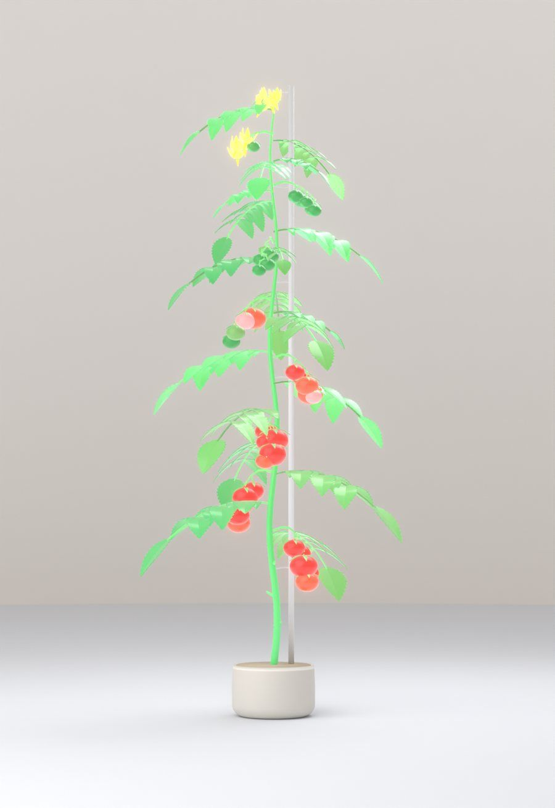
render coming
Frutica mid tomatoフルティカ
A high-Brix mid-size tomato bred for sweetness. Bigger than a cherry, smaller than a slicer. It is grown on steady water on Zone 1; the two deficit bags go to the cherries (CF Chika and Aiko).
Japanese and pro techniques
- Single stem; thin each truss to 5–6 fruit once set.
- Steady water on Zone 1; big swings bring blossom-end rot.
- Remove lower leaves.
- Weigh and Brix every pick to compare with the deficit cherries.
How the AI will handle it (planned)
- Steady Zone 1 profile; the app flags swings in the bed probe during fruit swell (planned).
- Camera: truss-thinning prompt when fruit are marble-sized.
- Reminders: sow indoors Aug–Sep, plant out after Cup Day, once soil is above 16 °C, keep Zone 1 steady through fruit swell (no deficit), log Brix weekly.
Lettuce and tomato are each represented by one MEXT entry; other varieties differ.
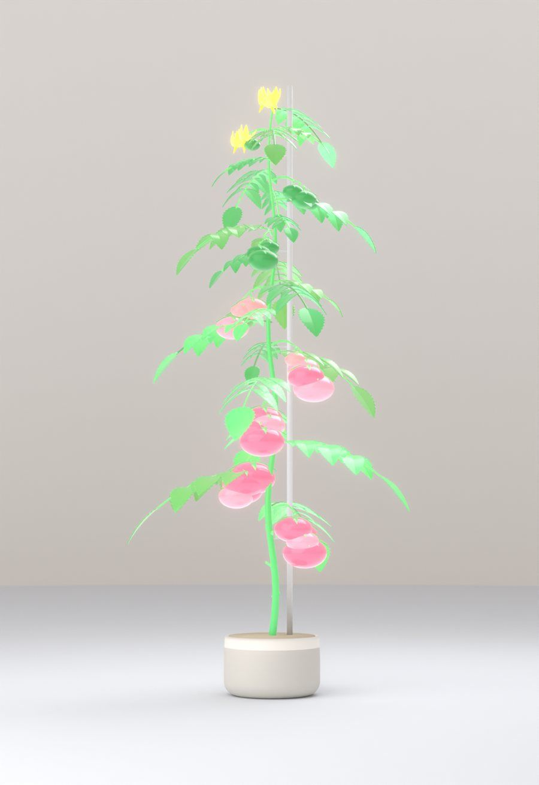
render coming
Momotaro pink tomato桃太郎
Japan's classic sweet pink slicer. Big fruit, so only one plant, and it is the one most likely to suffer if the deficit goes too far. Treated as the control-style plant for the big-fruit question.
Japanese and pro techniques
- Single stem; thin to 3–4 fruit per truss.
- Steady water: big fruit cracks and gets blossom-end rot with swings.
- Shade the fruit from afternoon sun under the roof edge if it scorches.
- Pick at full pink, not red.
How the AI will handle it (planned)
- Steady Zone 1 profile; the app flags swings in the bed probe during fruit swell.
- Camera: thinning prompt at marble size, then a ripeness heads-up.
- Reminders: sow indoors Aug–Sep, plant out after Cup Day, once soil is above 16 °C, keep Zone 1 steady through fruit swell (no deficit), log Brix weekly.
Lettuce and tomato are each represented by one MEXT entry; other varieties differ.
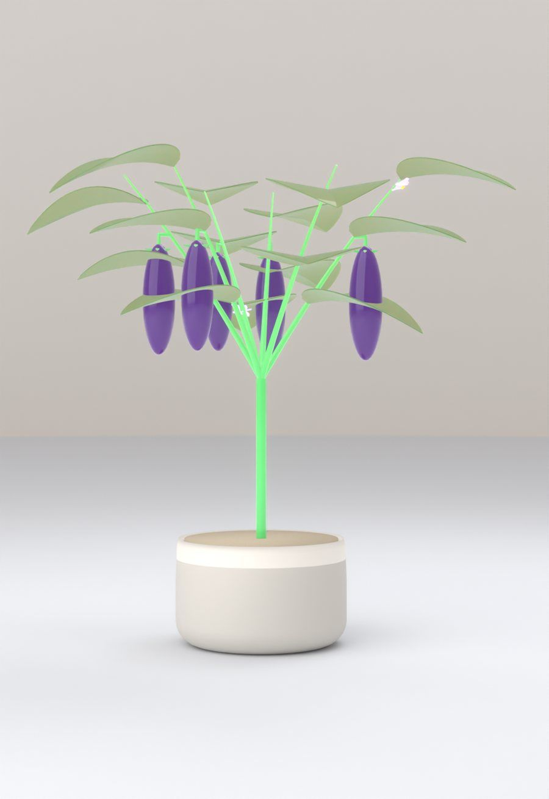
render coming
Senryo Nigo eggplant千両二号
Japan's standard eggplant: glossy, reliable and quick to size up. The saying is that eggplant is made with water, so it is the opposite of the tomatoes.
Japanese and pro techniques
- Three-stem training (3本仕立て): keep the main stem and two strong side shoots, stake each.
- Never let it dry out; mulch deep.
- Mid-summer cut-back (更新剪定): prune hard and root-prune in Feb for a fresh autumn crop.
- Pick young and glossy; dull skin means it went too long.
How the AI will handle it (planned)
- Zone 1 steady profile with a higher floor in heatwaves (planned).
- Camera: rough prompt for the Feb cut-back and when fruit are glossy and picking size.
- Reminders: plant out after Cup Day, once soil is above 16 °C, cut back in Feb, pull in late Apr.
Ranked by nutrient content per equal weight (per 100 g), not per serve and not a recommended amount.
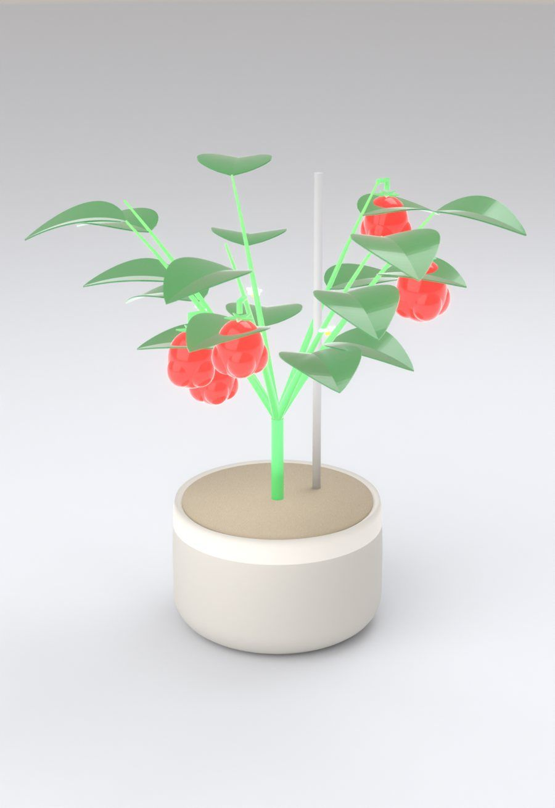
render coming
Capsicumパプリカ
Red blocky capsicum for the kitchen. Needs heat and a long season, so it gets the warm middle row and is fed at flowering.
Japanese and pro techniques
- Remove the first flower so the plant builds size before fruiting.
- Train to 3–4 stems and stake; fruit is heavy.
- Steady water and fortnightly liquid feed from first flower.
- Pick green for crunch or leave to full red for sweetness.
How the AI will handle it (planned)
- Zone 1 steady profile.
- Camera: rough prompt when fruit start to colour.
- Reminders: plant out after Cup Day, once soil is above 16 °C, feed from first flower, pull in late Apr.
Red capsicum and snap pea are raw values (see section 1). Raw capsicum falls under the general guidance for raw hard vegetables; snap peas fall under the general guidance for peas (EC-101).
Choking, overview (Source tier: MAIN, EC-101): A University of Padova overview of choking-prevention guidelines found they advise cutting grapes, berries and cherry tomatoes into small pieces; cooking beans and peas until tender, then mashing them; and cooking or grating pieces of raw fruit and vegetables. Round and hard or fibrous foods are the riskiest shapes and textures for young children.
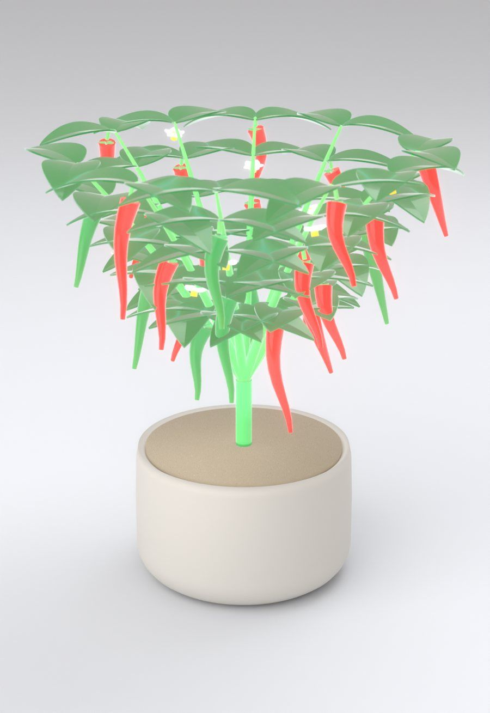
render coming
Chilli唐辛子
A compact chilli that colours on the plant. One plant is plenty; it sits next to the capsicum and gets the same treatment.
Japanese and pro techniques
- Pinch the growing tip early for a bushier plant.
- Steady water; stressed plants drop flowers.
- Let fruit colour fully on the plant before picking.
- Can be lifted into a pot and kept over winter under the roof.
How the AI will handle it (planned)
- Zone 1 steady profile.
- Camera: colour-change prompt.
- Reminders: plant out after Cup Day, once soil is above 16 °C, pick through autumn, decide in Apr whether to pot it up.
Chilli (MEXT 06171, raw). Not ranked. Heat note (Source tier: BACKUP, EC-103): Germany's risk-assessment agency says children are particularly sensitive to hot chilli products, that serious poisonings in young children have been described, and that hot chilli sauces should be kept out of small children's reach. Its warning is about very hot products; it gives no guidance on ordinary chillies in family cooking.
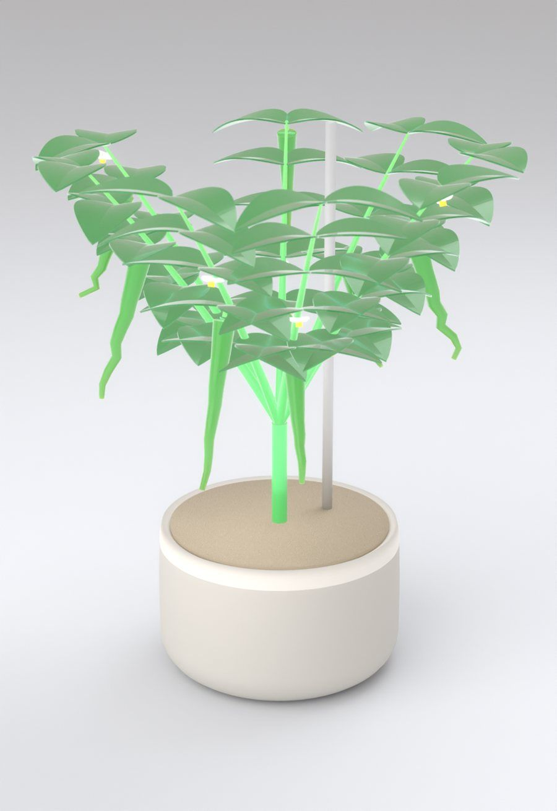
render coming
Manganji pepper万願寺とうがらし
The big, sweet, mild Kyoto pepper. Long green fruit up to 15 cm, grilled whole. Takes the capsicum spot in the plan.
Japanese and pro techniques
- Three-stem training with a stake per stem.
- Remove the first fruit so the plant sizes up.
- Steady water: heat and drought stress can make sweet peppers hot.
- Pick green at 12–15 cm; they keep coming.
How the AI will handle it (planned)
- Zone 1 steady profile, higher floor in heatwaves.
- Camera: rough picking-size prompt.
- Reminders: plant out after Cup Day, once soil is above 16 °C, feed from first flower, pull in late Apr.
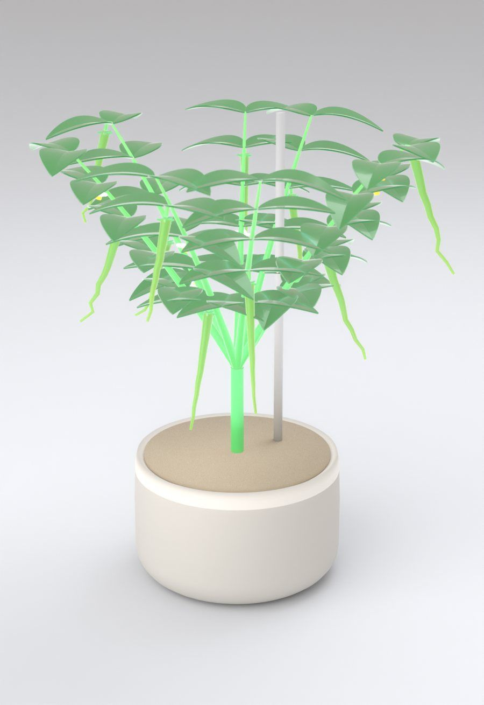
render coming
Fushimi Amanaga pepper伏見甘長
Long, thin, sweet Kyoto pepper that crops heavily. Thinner than Manganji and faster to cook.
Japanese and pro techniques
- Three-stem training; pinch the first flower.
- Steady water to keep fruit mild.
- Pick often at 10–12 cm to keep the plant setting.
How the AI will handle it (planned)
- Zone 1 steady profile.
- Camera: picking-size prompt.
- Reminders: plant out after Cup Day, once soil is above 16 °C, pull in late Apr.
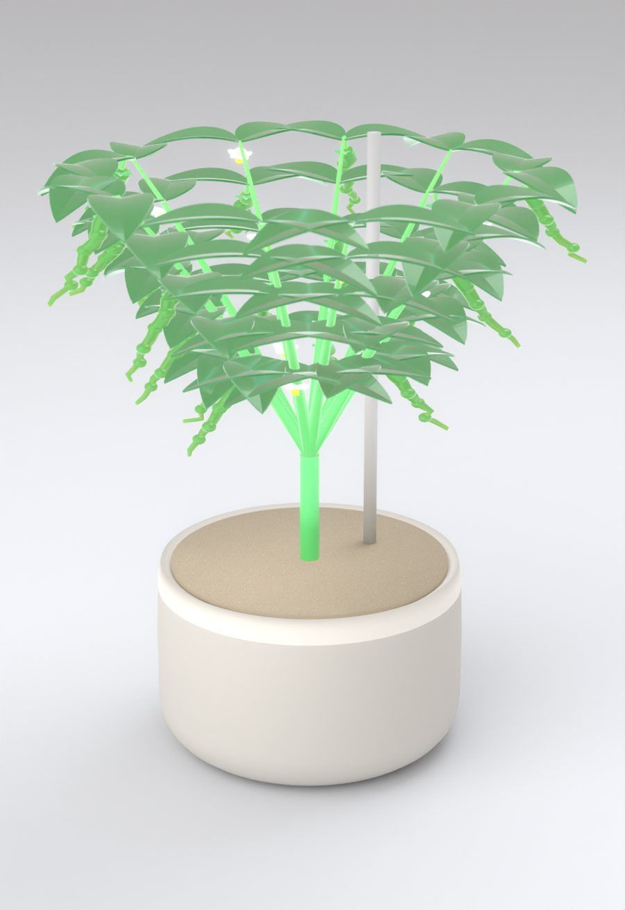
render coming
Shishito pepperししとう
The small, wrinkled snack pepper. Blistered in a pan with salt. Happy in a pot or the bed.
Japanese and pro techniques
- Pinch the first flower; train to 3 stems.
- Keep water steady: a dry, hot spell is when the odd fruit turns hot.
- Pick at 5–6 cm while still green and glossy.
How the AI will handle it (planned)
- Zone 1 steady profile.
- Camera: picking prompt every few days in summer.
- Reminders: plant out after Cup Day, once soil is above 16 °C, pick little and often.
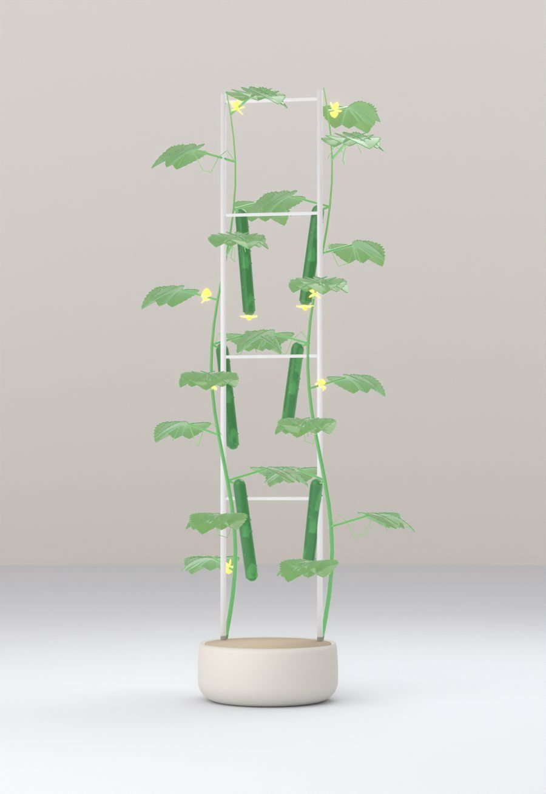
render coming
Natsu Suzumi cucumber夏すずみ
A crisp Japanese cucumber that climbs and tolerates disease. Grown on a net at the end of the trellis if there is room.
Japanese and pro techniques
- Net or string trellis; tie the main stem up.
- Remove side shoots and fruit below the fifth node, then pinch laterals after two leaves.
- Steady water and mulch; bitter fruit comes from stress.
- Pick daily at about 20 cm; one missed fruit slows the vine.
How the AI will handle it (planned)
- Zone 1 steady profile with a high floor in heatwaves.
- Camera: rough picking prompt; cucumbers hide.
- Reminders: sow after Cup Day once soil is above 16 °C, again in Dec for a second vine, pull in Mar.
Ranked by nutrient content per equal weight (per 100 g), not per serve and not a recommended amount.
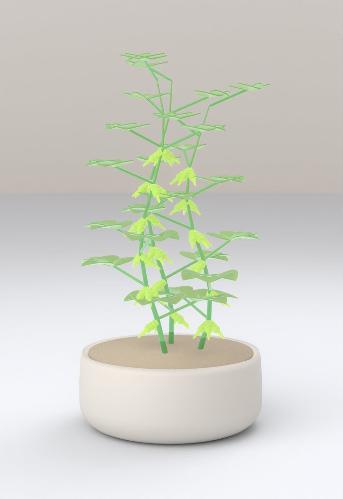
render coming
Yuagari Musume edamame湯あがり娘
Chamame-type edamame, very sweet. Direct sown in late spring and boiled the day it is picked.
Japanese and pro techniques
- Direct sow 2–3 seeds per station; net the seedlings from birds.
- Hill soil up to the first leaves once established.
- Steady water at flowering and pod fill; that is when yield is set.
- Pick the whole plant when most pods are plump but still green.
How the AI will handle it (planned)
- Zone 1 steady profile, floor raised during flowering (planned).
- Camera: pod-fill prompt.
- Reminders: sow Nov, net from birds, pick Jan–Feb.
Edamame (2): this falls under the general guidance for beans and peas: cook until tender, then mash (EC-101).
Edamame choking notes (beside edamame): Japan's Consumer Affairs Agency advises not giving hard foods that need chewing, such as beans and nuts, to children aged 5 and under (EC-114, MAIN (Japanese government)). Japan's Consumer Affairs Agency describes a 1-year-old who stuffed several edamame beans into their mouth, inhaled half a bean into the lung, and needed it removed under general anaesthesia. This one case shows how it can happen; it doesn't show how often (EC-115, MAIN (Japanese government)). A Japanese hospital case report describes an inhaled edamame bean that didn't show on X-ray. It was located with repeated CT scans and removed 9 days after it was inhaled (EC-117, Supporting (hospital), illustration only). The Japanese airway studies cited here name peanuts, not garden crops (EC-116, EC-118). Labelled inference: we infer that firm, round beans such as edamame and broad beans carry a similar risk, as Japan's Consumer Affairs Agency groups beans and nuts together (EC-114, EC-118).
Beans and nuts (MAIN (Japanese government), EC-114): not giving hard foods that need chewing, such as beans and nuts, to children aged 5 and under; see the notes beside edamame.
Labelled inferences: edamame and broad beans fall under the general guidance for beans; snap peas fall under the general guidance for peas; raw daikon, raw broccoli stems and raw red capsicum fall under the general guidance for raw hard vegetables. No source names these crops.
Choking, overview (Source tier: MAIN, EC-101): A University of Padova overview of choking-prevention guidelines found they advise cutting grapes, berries and cherry tomatoes into small pieces; cooking beans and peas until tender, then mashing them; and cooking or grating pieces of raw fruit and vegetables. Round and hard or fibrous foods are the riskiest shapes and textures for young children.
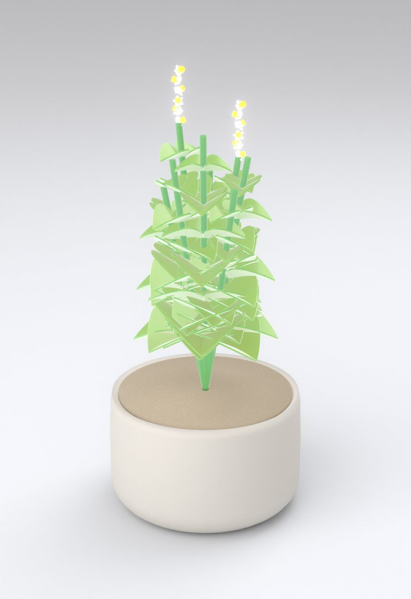
render coming
Basilバジル
Sweet basil on the front edge, under the tomatoes. Pinched weekly so it bushes out and never flowers.
Japanese and pro techniques
- Pinch the tips above a leaf pair every week.
- Remove flower spikes as they form.
- Pick from the top, not the bottom leaves.
- Keep water steady; basil wilts fast in a north wind.
How the AI will handle it (planned)
- Zone 1 steady profile.
- Camera: pinch reminder when the tops bolt.
- Reminders: plant out after Cup Day, once soil is above 16 °C, pinch weekly, pull before the first cold snap.
Herbs (own list, per 100 g, scaled within herbs only; all raw):
Herbs are eaten in small amounts, so these scores are not comparable with the vegetable list. No herb-specific safety caution was sourced.
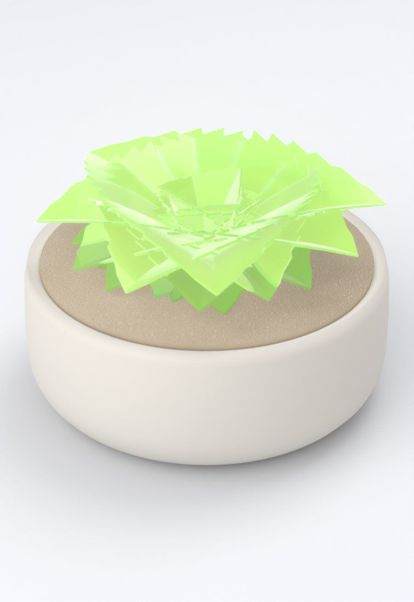
render coming
Lettuceレタス
Loose-leaf lettuce for picking outer leaves. In the summer layout it needs shade in heatwaves; in winter it just keeps going.
Japanese and pro techniques
- Pick outer leaves; leave the heart.
- Sow a few plants every 3–4 weeks rather than a row at once.
- Shade cloth over the front edge on days above 35 °C.
- Steady water; a dry lettuce turns bitter and bolts.
How the AI will handle it (planned)
- Zone 1 steady profile.
- Camera: bolting heads-up; seasonal reminder to shade.
- Reminders: successive sowing every month, shade cloth on heatwave days.
Leaf lettuce (10): see the nitrate note beside spinach: the panel judged nitrate in lettuce not a health concern for children (EC-102, BACKUP).
Spinach (7) — nitrate note (Source tier: BACKUP, EC-102): A 2010 European food safety panel concluded that nitrate in lettuce is not a health concern for children. Nitrate in spinach could raise some young children's intake to a level where a concern cannot be ruled out. The panel advised against giving spinach to children with bacterial gut infections, and noted that poorly stored cooked vegetables can convert nitrate to nitrite. (Spinach and lettuce only; not assessed for chard or Asian greens.)
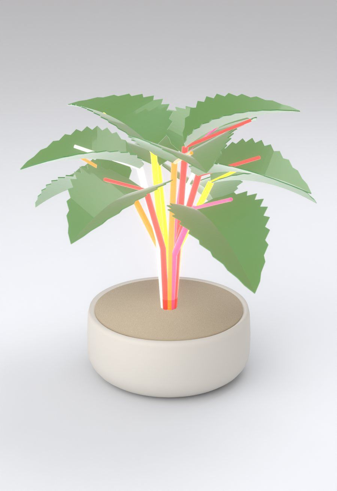
render coming
Rainbow chardスイスチャード
Red, yellow, orange and pink stems, cut-and-come-again. One of the few crops that stays in both layouts.
Japanese and pro techniques
- Cut outer stalks at the base; the centre keeps producing.
- Steady water; it wilts in heat but recovers.
- Replace plants after about a year when they bolt.
How the AI will handle it (planned)
- Zone 1 steady profile.
- Camera: rough prompt when outer leaves are ready.
- Reminders: sow in autumn and spring, pull bolting plants.
Chard, mizuna, shungiku, komatsuna (3-6): leafy greens, ranked as boiled.
Cool season
Late Apr to Sep. Peas and broad beans take the trellis; garlic and brassicas take the middle.
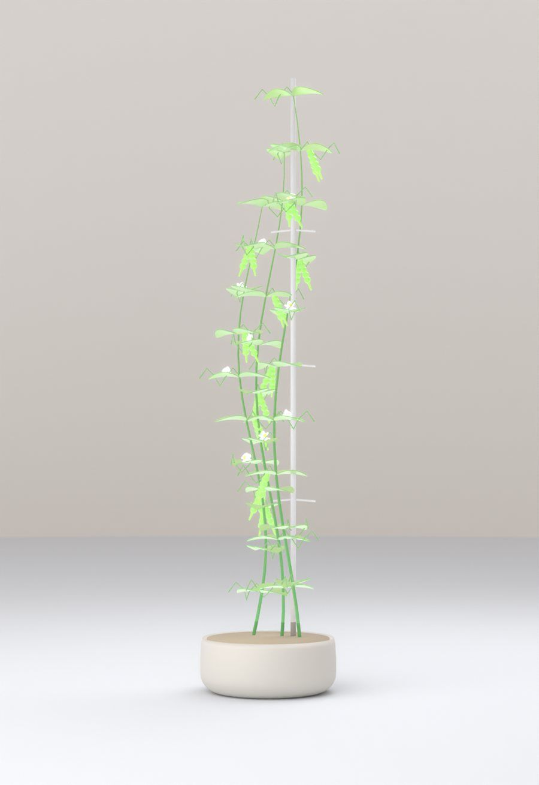
render coming
Snap peasスナップエンドウ
Sweet, high-yield climber that takes over the tomato trellis once the summer crops are pulled.
Japanese and pro techniques
- Sow straight into the bed; peas dislike transplanting.
- Net or string trellis; tendrils do the rest.
- Go easy on nitrogen or you get leaves, not pods.
- Pick when pods are plump but still snap.
How the AI will handle it (planned)
- Zone 1 steady profile; cool-season water is mostly rain once roof sheets are lifted.
- Camera: rough picking prompt.
- Reminders: sow Apr–May, lift roof sheets for rain, pull in Oct for the tomatoes.
Red capsicum and snap pea are raw values (see section 1). Raw capsicum falls under the general guidance for raw hard vegetables; snap peas fall under the general guidance for peas (EC-101).
Labelled inferences: edamame and broad beans fall under the general guidance for beans; snap peas fall under the general guidance for peas; raw daikon, raw broccoli stems and raw red capsicum fall under the general guidance for raw hard vegetables. No source names these crops.
Choking, overview (Source tier: MAIN, EC-101): A University of Padova overview of choking-prevention guidelines found they advise cutting grapes, berries and cherry tomatoes into small pieces; cooking beans and peas until tender, then mashing them; and cooking or grating pieces of raw fruit and vegetables. Round and hard or fibrous foods are the riskiest shapes and textures for young children.
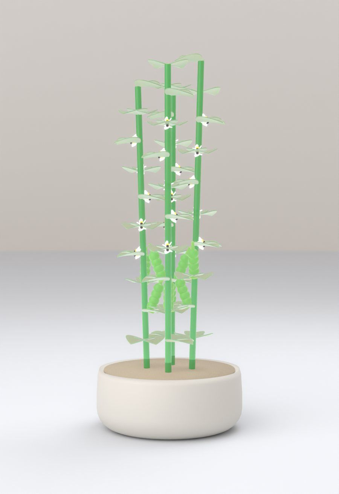
render coming
Broad beansそら豆
Upright winter legume with black-and-white flowers. Shares the trellis with the peas and fixes nitrogen for the next tomatoes.
Japanese and pro techniques
- Sow direct 5 cm deep; stake or string the row.
- Pinch the tops out when plants are about 60 cm to deter aphids and fill the pods.
- Pick pods young, or let them bulge for shelling.
- Chop the plants into the bed at the end.
How the AI will handle it (planned)
- Zone 1 steady profile; mostly rain-fed in winter.
- Camera: rough tip-pinch and picking prompts.
- Reminders: sow Apr–May, pinch tops in Aug, clear in Nov.
Broad bean (8=) — G6PD / favism note (Source tier: MAIN, EC-104, EC-105): Favism is a breakdown of red blood cells that can happen when people with G6PD deficiency eat fava (broad) beans. A university review of case reports found it was most severe in the youngest children and in pregnant women. A Monash-led review found that fava beans (and food cross-contaminated with them) were among the few triggers consistently linked to haemolysis in people with G6PD deficiency; the overall quality of the evidence was low. If you have questions about G6PD deficiency, ask a GP. Preparation: this falls under the general guidance for beans: cook until tender, then mash. See also the bean notes beside edamame (labelled inference, EC-114/EC-118).
Edamame choking notes (beside edamame): Japan's Consumer Affairs Agency advises not giving hard foods that need chewing, such as beans and nuts, to children aged 5 and under (EC-114, MAIN (Japanese government)). Japan's Consumer Affairs Agency describes a 1-year-old who stuffed several edamame beans into their mouth, inhaled half a bean into the lung, and needed it removed under general anaesthesia. This one case shows how it can happen; it doesn't show how often (EC-115, MAIN (Japanese government)). A Japanese hospital case report describes an inhaled edamame bean that didn't show on X-ray. It was located with repeated CT scans and removed 9 days after it was inhaled (EC-117, Supporting (hospital), illustration only). The Japanese airway studies cited here name peanuts, not garden crops (EC-116, EC-118). Labelled inference: we infer that firm, round beans such as edamame and broad beans carry a similar risk, as Japan's Consumer Affairs Agency groups beans and nuts together (EC-114, EC-118).
Beans and nuts (MAIN (Japanese government), EC-114): not giving hard foods that need chewing, such as beans and nuts, to children aged 5 and under; see the notes beside edamame.
Labelled inferences: edamame and broad beans fall under the general guidance for beans; snap peas fall under the general guidance for peas; raw daikon, raw broccoli stems and raw red capsicum fall under the general guidance for raw hard vegetables. No source names these crops.
Choking, overview (Source tier: MAIN, EC-101): A University of Padova overview of choking-prevention guidelines found they advise cutting grapes, berries and cherry tomatoes into small pieces; cooking beans and peas until tender, then mashing them; and cooking or grating pieces of raw fruit and vegetables. Round and hard or fibrous foods are the riskiest shapes and textures for young children.
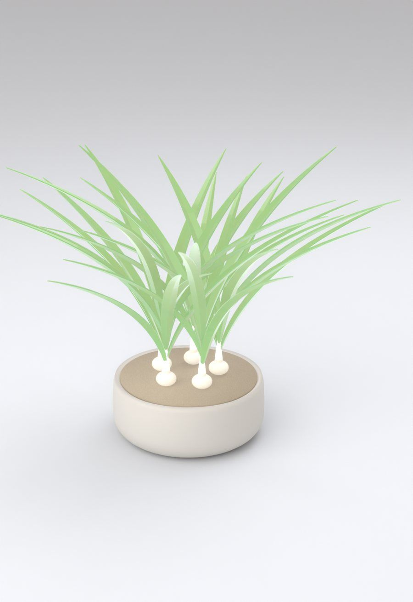
render coming
Garlicにんにく
Planted as cloves in autumn and lifted in late spring. Takes the middle row through winter.
Japanese and pro techniques
- Plant the biggest cloves 5 cm deep, 15 cm apart, pointed end up.
- Mulch; keep weeds down.
- As the leaves yellow, put the roof sheets back on to keep rain off; the drip line can't be turned off for garlic alone.
- Lift when a third of the leaves are brown; cure 3–4 weeks in the shed.
How the AI will handle it (planned)
- Zone 1 steady profile until Oct (planned).
- Dry-off: garlic shares the zone 1 drip line and cannot be switched off on its own, so in Oct put the lifted roof sheets back to stop rain; drip alone holds the bed band, so the dry-off is partial.
- Camera: yellowing heads-up for the dry-off.
- Reminders: plant Apr–May, roof sheets back on in Oct, lift Nov.
Garlic (MEXT 06223, raw). Not ranked; used in small amounts.
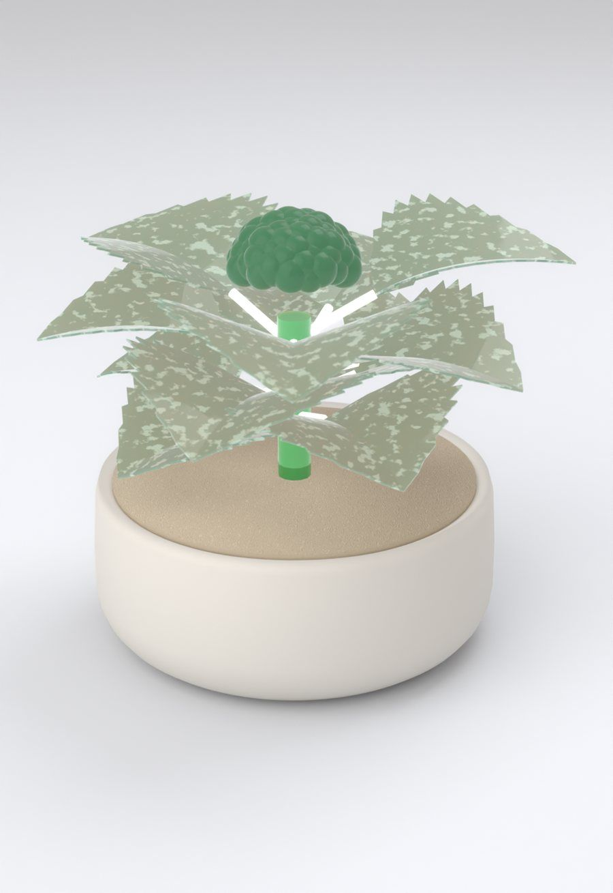
render coming
Brassicas: broccoli or kaleブロッコリー · ケール
Broccoli or kale in the middle row. Blue-green leaves, a central head, then side shoots. Netting is the whole game in Melbourne.
Japanese and pro techniques
- Net against cabbage white butterfly from day one.
- Firm the soil around seedlings; brassicas like it solid.
- Cut the main head before the buds open; side shoots follow.
- Kale: pick lower leaves, leave the crown.
How the AI will handle it (planned)
- Zone 1 steady profile.
- Camera: rough prompt when the head is tight and ready.
- Reminders: plant Apr–May under net, pick from Jul.
Kale (1): raw values; see the raw/boiled note in section 1.
State: each crop's state (raw or boiled) and MEXT food number are shown. Values are as listed by MEXT; some crops are raw and others boiled, which favours raw crops for vitamin C and folate. Kale is raw while the leafy greens it is compared with are boiled, so kale's first place is not a like-for-like result.
Broccoli (8=): tied with broad bean. Raw broccoli stems fall under the general guidance for raw hard vegetables: cook until tender or grate (EC-101). No specific guidance is given here for cooked, soft broccoli.
Labelled inferences: edamame and broad beans fall under the general guidance for beans; snap peas fall under the general guidance for peas; raw daikon, raw broccoli stems and raw red capsicum fall under the general guidance for raw hard vegetables. No source names these crops.
Choking, overview (Source tier: MAIN, EC-101): A University of Padova overview of choking-prevention guidelines found they advise cutting grapes, berries and cherry tomatoes into small pieces; cooking beans and peas until tender, then mashing them; and cooking or grating pieces of raw fruit and vegetables. Round and hard or fibrous foods are the riskiest shapes and textures for young children.
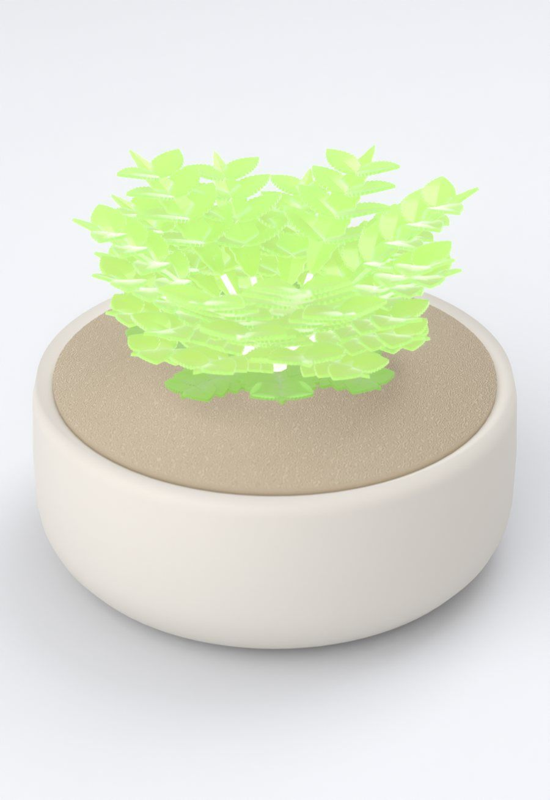
render coming
Kyo Mizore mizuna京みぞれ
Fine, feathery Kyoto green that regrows after cutting. Mild enough for salad, good in hotpot.
Japanese and pro techniques
- Sow thinly, thin to 15 cm.
- Cut 3 cm above the crown; it regrows two or three times.
- Steady water; it bolts in heat.
How the AI will handle it (planned)
- Zone 1 steady profile.
- Camera: rough cut-size prompt.
- Reminders: sow Mar and Aug, cut every 3–4 weeks.
Chard, mizuna, shungiku, komatsuna (3-6): leafy greens, ranked as boiled.
render coming
Komatsuna小松菜
Fast, mild Japanese mustard spinach with smooth spoon-shaped leaves. 30–40 days from sowing, almost all year.
Japanese and pro techniques
- Sow every 3 weeks for a steady supply.
- Thin to 10 cm; eat the thinnings.
- Net against caterpillars in autumn.
- Pick whole plants at 20–25 cm.
How the AI will handle it (planned)
- Zone 1 steady profile.
- Camera: rough picking prompt.
- Reminders: successive sowing Feb–May and Aug–Oct.
Chard, mizuna, shungiku, komatsuna (3-6): leafy greens, ranked as boiled.
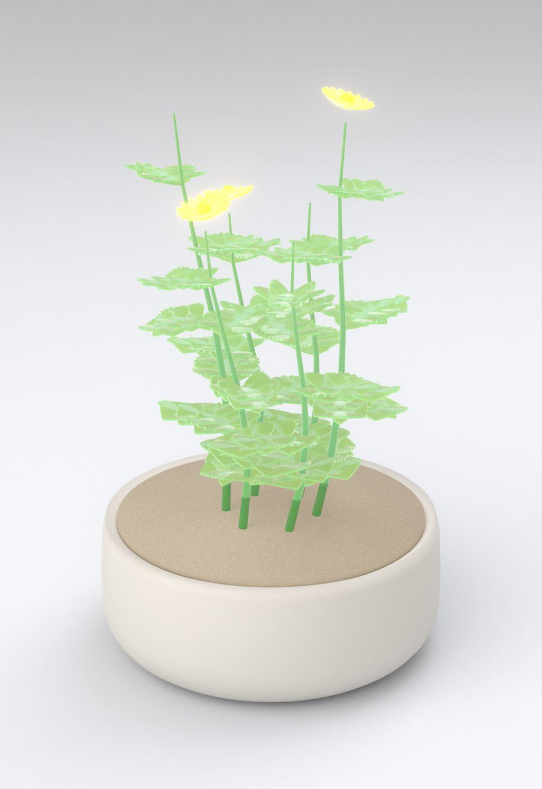
render coming
Shungiku春菊
Aromatic edible chrysanthemum for hotpot, with lobed leaves and small yellow daisies if you let it flower.
Japanese and pro techniques
- Pick the tips (摘み取り) so the plant branches and keeps cropping.
- Thin to 15 cm.
- Steady water; it bolts and turns bitter in heat.
How the AI will handle it (planned)
- Zone 1 steady profile.
- Camera: rough tip-pick prompt.
- Reminders: sow Mar and Aug, pick tips weekly.
Chard, mizuna, shungiku, komatsuna (3-6): leafy greens, ranked as boiled.
render coming
Spinachほうれん草
True spinach for the cold months. It bolts as days lengthen, so it is strictly a winter crop here.
Japanese and pro techniques
- Sow direct; thin to 10 cm.
- Pick outer leaves, or cut whole plants young.
- Steady water; dry spells trigger bolting.
How the AI will handle it (planned)
- Zone 1 steady profile.
- Camera: bolting heads-up.
- Reminders: sow Mar–May, last sowing Aug.
Spinach (7) — nitrate note (Source tier: BACKUP, EC-102): A 2010 European food safety panel concluded that nitrate in lettuce is not a health concern for children. Nitrate in spinach could raise some young children's intake to a level where a concern cannot be ruled out. The panel advised against giving spinach to children with bacterial gut infections, and noted that poorly stored cooked vegetables can convert nitrate to nitrite. (Spinach and lettuce only; not assessed for chard or Asian greens.)
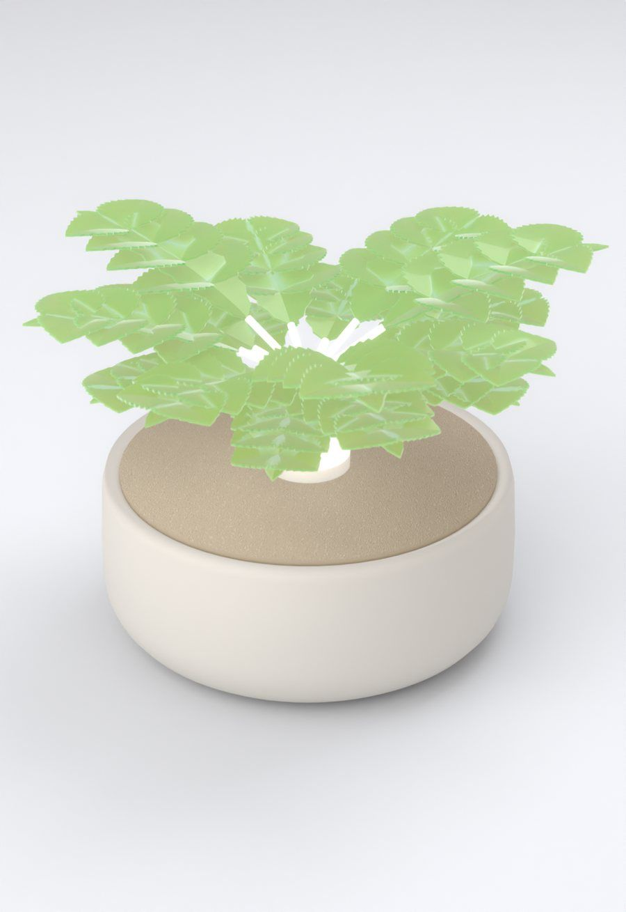
render coming
Taibyo Sobutori daikon耐病総太り
Japan's standard daikon. Needs deep, loose soil; the 0.63 m bed is fine. The white shoulder pushes up out of the soil as it sizes.
Japanese and pro techniques
- Sow direct, never transplant.
- Thin to one plant per station at 3–4 true leaves.
- Loose, stone-free soil; lumps fork the root.
- Pick at 60–70 days before it goes pithy.
How the AI will handle it (planned)
- Zone 1 steady profile.
- Camera: rough thinning and lifting prompts.
- Reminders: sow Mar, thin Apr, lift May–Jun.
Daikon is ranked as boiled. Raw daikon falls under the general guidance for raw hard vegetables. No specific guidance is given here for cooked, soft daikon.
Labelled inferences: edamame and broad beans fall under the general guidance for beans; snap peas fall under the general guidance for peas; raw daikon, raw broccoli stems and raw red capsicum fall under the general guidance for raw hard vegetables. No source names these crops.
Choking, overview (Source tier: MAIN, EC-101): A University of Padova overview of choking-prevention guidelines found they advise cutting grapes, berries and cherry tomatoes into small pieces; cooking beans and peas until tender, then mashing them; and cooking or grating pieces of raw fruit and vegetables. Round and hard or fibrous foods are the riskiest shapes and textures for young children.
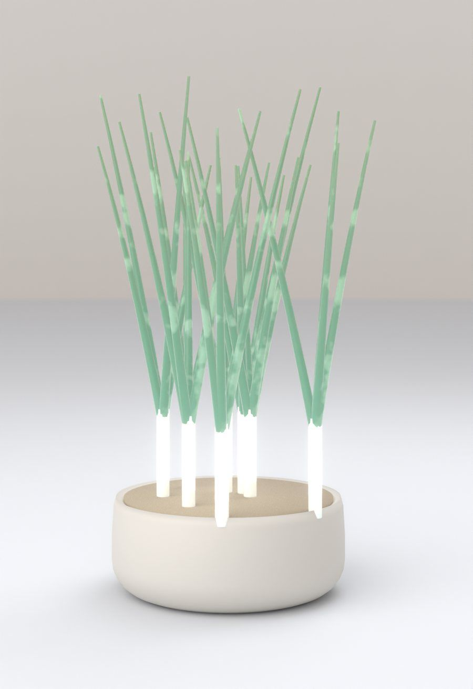
render coming
Kujo negi九条ねぎ
Tender Kyoto green onion grown for its leaves. Cut and it regrows; divide the clumps each year.
Japanese and pro techniques
- Sow in a pot, transplant in clumps of 2–3.
- Hill soil up (土寄せ) for a longer white base, or skip it for the green-leaf style.
- Cut leaves 3 cm above the base; they regrow.
- Divide and replant clumps in spring and autumn.
How the AI will handle it (planned)
- Zone 1 steady profile.
- Camera: rough cut prompt.
- Reminders: sow Mar and Sep, divide clumps at each changeover.
Ranked by nutrient content per equal weight (per 100 g), not per serve and not a recommended amount.
Perennial and all-year
The shed-end arm: blueberry, strawberries, shiso, mitsuba and the kitchen herbs stay put.
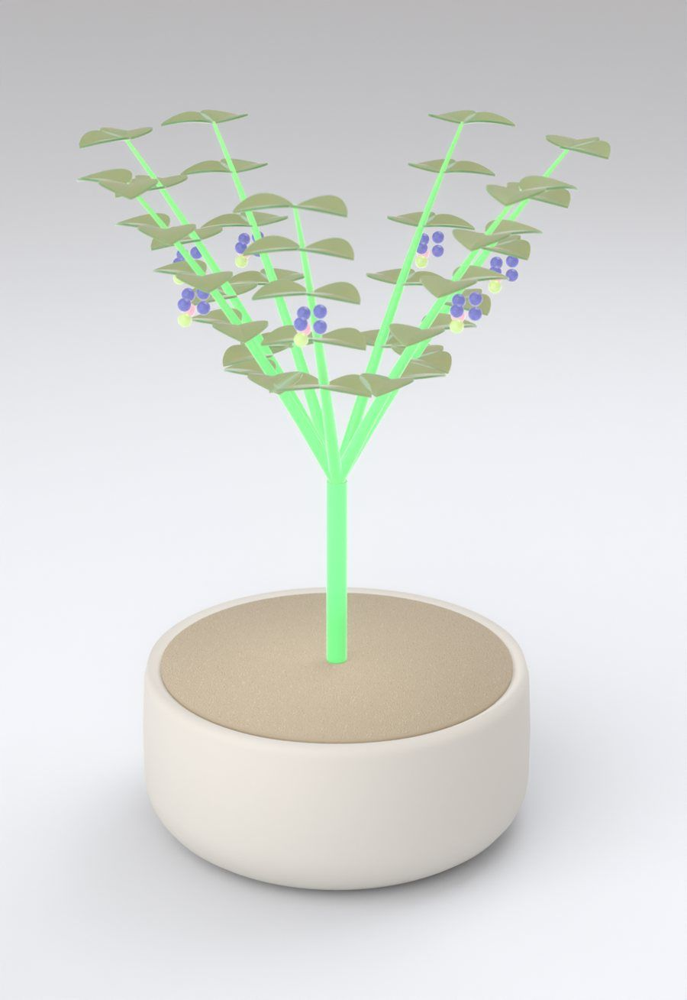
render coming
Blueberryブルーベリー
A small bush in its own acid pot in the fence–shed corner. Stays put all year; the only crop with its own soil mix.
Japanese and pro techniques
- Acid mix (pH 4.5–5.5), pine-bark mulch, rainwater when you can.
- Two varieties nearby help pollination.
- Net from birds as the fruit colours.
- Prune out old wood in winter.
How the AI will handle it (planned)
- No dedicated probe: the pot is watered by its own dripper on Zone 1, so check it by finger or with a cheap manual moisture meter, more often in heatwaves (planned).
- Camera: rough prompt when berries colour and the net should go on.
- Reminders: net in Dec, prune Jul, top up pine-bark mulch in spring.
Strawberry and blueberry: berries, cut into small pieces (EC-101). Cherry tomato: quarters (Japan's Children and Families Agency; also Consumer Affairs Agency, EC-114). See section 4.
Blueberries: covered directly as berries (small pieces, EC-101).
Choking, overview (Source tier: MAIN, EC-101): A University of Padova overview of choking-prevention guidelines found they advise cutting grapes, berries and cherry tomatoes into small pieces; cooking beans and peas until tender, then mashing them; and cooking or grating pieces of raw fruit and vegetables. Round and hard or fibrous foods are the riskiest shapes and textures for young children.
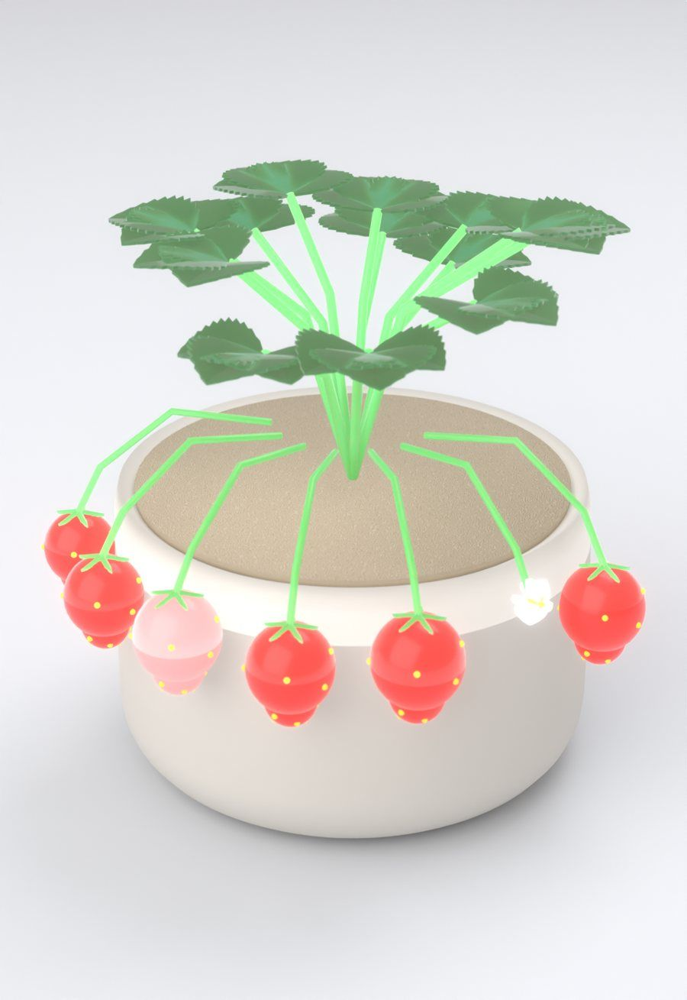
render coming
Strawberries: Yotsuboshiよつぼし
One of the few premium Japanese strawberries grown from seed. Sown in late winter, planted in autumn, fruiting the next spring.
Japanese and pro techniques
- Raised or mulched so fruit never touches soil.
- Remove old leaves (葉かき) and runners you do not need.
- Pick at full red; sweetness comes in the last two days.
- Log Brix on the best fruit.
How the AI will handle it (planned)
- Zone 1 steady profile.
- Camera: runner and ripeness heads-ups.
- Reminders: sow Aug, plant Mar, remove runners Nov–Jan.
Strawberry and blueberry: berries, cut into small pieces (EC-101). Cherry tomato: quarters (Japan's Children and Families Agency; also Consumer Affairs Agency, EC-114). See section 4.
Choking, overview (Source tier: MAIN, EC-101): A University of Padova overview of choking-prevention guidelines found they advise cutting grapes, berries and cherry tomatoes into small pieces; cooking beans and peas until tender, then mashing them; and cooking or grating pieces of raw fruit and vegetables. Round and hard or fibrous foods are the riskiest shapes and textures for young children.
Shiso, red and green赤じそ · 青じそ
Green shiso for the kitchen, red for colour and pickles. Self-seeds along the herb edge, so it behaves like a perennial.
Japanese and pro techniques
- Sow after frost; seed needs light, so barely cover it.
- Pinch tips for bushy plants.
- Pick leaves from the top.
- Let one plant set seed for next year.
How the AI will handle it (planned)
- Zone 1 steady profile.
- Camera: pinch reminder.
- Reminders: sow Sep–Oct, pull in Apr and save seed.
Herbs (own list, per 100 g, scaled within herbs only; all raw):
Herbs are eaten in small amounts, so these scores are not comparable with the vegetable list. No herb-specific safety caution was sourced.
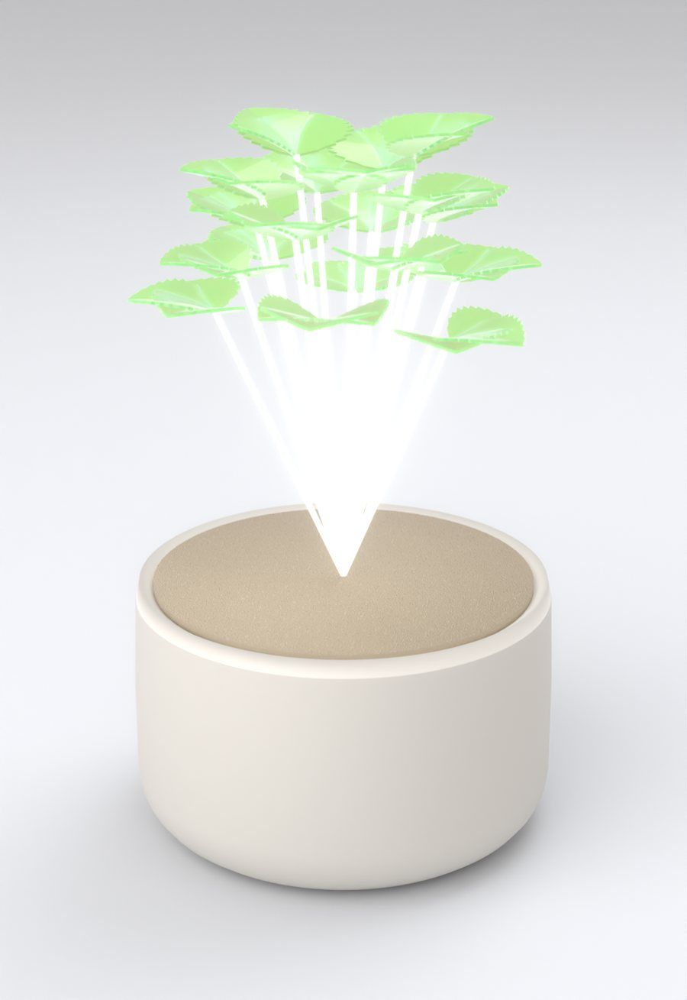
render coming
Mitsuba三つ葉
Japanese wild parsley with three leaflets. Likes the shade at the shed end and bolts in heat.
Japanese and pro techniques
- Shade and steady moisture.
- Cut stems above the crown; it regrows.
- Let it self-seed in the shady corner.
How the AI will handle it (planned)
- Zone 1 steady profile.
- Camera: bolting heads-up in Nov.
- Reminders: sow Mar and Sep, cut before it bolts.
Herbs (own list, per 100 g, scaled within herbs only; all raw):
Herbs are eaten in small amounts, so these scores are not comparable with the vegetable list. No herb-specific safety caution was sourced.
Kitchen herbsパセリ · チャイブ · コリアンダー · タイム
Parsley, chives, coriander and thyme on the shed-end arm. Snipped often, replaced when they bolt or get woody.
Japanese and pro techniques
- Parsley: biennial; sow spring and autumn, pick outer stems.
- Chives: divide clumps every 2 years; purple pom flowers in spring.
- Coriander: bolts in heat, so sow in autumn and early spring and pick often.
- Thyme: dry, well-drained spot; trim after flowering.
How the AI will handle it (planned)
- Zone 1, same band as the bed: there is no separate probe or valve for the herbs.
- Suggestion: to keep thyme a little drier, try planting it midway between two drip-line loops (they run 30 cm apart) rather than on top of a line.
- Camera: rough prompt when coriander starts to bolt.
- Reminders: sow coriander Mar and Sep, divide chives in Aug, trim thyme after flowering.
Herbs (own list, per 100 g, scaled within herbs only; all raw):
Thyme not ranked (MEXT lists dried ground thyme only).
Herbs are eaten in small amounts, so these scores are not comparable with the vegetable list. No herb-specific safety caution was sourced.
Sources
Growing practice on this page follows the published guides below. Links are listed for checking, not yet checked line by line. Each is marked to verify until the orchestrator has confirmed it.
- Takii Seed (varieties, growing guides) to verify
- Sakata Seed (varieties, growing guides) to verify
- Agriculture Victoria to verify
- Gardening Australia (ABC) to verify
- Royal Horticultural Society grow guides to verify
- Bureau of Meteorology (forecast and evaporation for the water plan) to verify
- MAFF, Japan Ministry of Agriculture, Forestry and Fisheries to verify
Deficit-watering figures and moisture bands repeat the planned settings on the Controlled water stress page. VWC = volumetric water content as read by the soil probes.